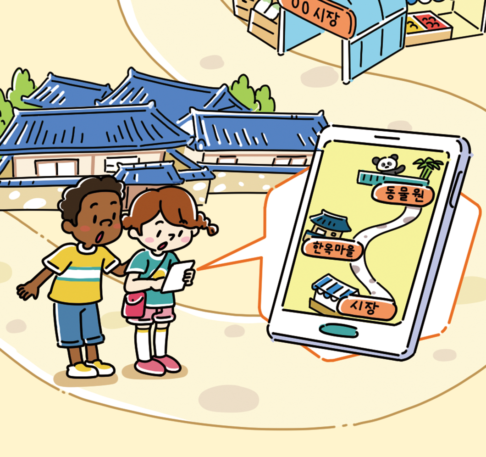

- 물음 1
- 물음 2
- 물음 3
- 물음 4
- 물음 5
-
그림은 어떤 상황인가요?
동물원에 있는 학생들이 한옥 마을에 들렀다가 시장에서 점심을 먹으려고 합니다.동물원에서 시장까지의 거리는 몇 km인가요?
3km입니다.- 4
- 5
동물원에서 한옥 마을까지의 거리는 몇 km인가요?
1km입니다.- 1
- 5
한옥 마을에서 시장까지의 거리는 어떻게 구할 수 있을까요?
동물원에서 시장까지의 거리에서 동물원에서 한옥 마을까지의 거리를 빼면 구할 수 있습니다.한옥 마을에서 시장까지의 거리는 몇 km인지 어림해 보세요.
2 km보다 멀 것 같습니다.-
한옥 마을 먼저
들렀다가 시장에서 점심 먹자. -
동물원에서 시장까지의
거리는3km, 동물원에서- 4
- 5
한옥 마을까지의 거리는1km네.- 1
- 5
-
한옥 마을에서
시장까지의 거리는
몇 km인지 어림해 볼까?
-